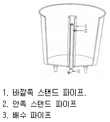
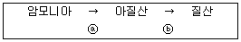
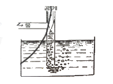
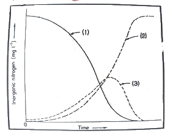

수산양식기사 (2018-03-04 기출문제)
1과목: 어류양식학
1. 인공종묘생산 시 부화 후 먹이생물 단계를 거치지 않고 처음부터 인공배합사료를 공급하는 종묘생산방법이 일반적인 어종은?
- 무지개송어
- 넙치
- 은어
- 참돔
(정답률: 77%)

2. 잉어 종묘생산 시 숙성이의 발생 원인과 거리가 먼 것은?
- 양성밀도가 너무 높은 경우
- 사료를 충분하게 자주 공급한 경우
- 사료 주는 시간이 고르지 못한 경우
- 질병이 발생한 경우
(정답률: 84%)
3. U.G.F(미지성장인자)의 효과를 위해서 쓰일 수 있는 사료의 성분은?
- 효모
- 어분
- 비타민C
- 무기염류
(정답률: 93%)
4. 유럽장어의 특징에 대한 설명으로 옳은 것은?
- 기생충에 잘 감염되지 않는다.
- 체장이 길어 소비자가 좋아하지 않는다.
- 고수온에 강하여 폐사율이 낮다.
- 공식에 의한 폐사가 우리나라 뱀장어(참장어)보다 많다.
(정답률: 77%)
5. 넙치의 자,치어 사육에 대한 설명이 적합하지 않은 것은?
- 부화자어를 20~50m3수조에서 사육하면 좋다.
- 자어 수용 밀도는 소형 수조의 경우 수량 1톤 당 1만 마리 전후이다.
- 사육용수는 여과한 해수를 사용하며, 방양한지 약 일주일이 지나면 물을 교환하기 시작하고 점차 환수량을 증가시킨다.
- 에어레이션을 계속하고 광선은 적절히 차단하여 많은 날에는 1000lx 이내로 하고, 수온은 18℃ 전후로 유지한다.
(정답률: 67%)
6. 참돔의 부화 후 3~4일 경 먹이로써 적합하지 않은 것은?
- 코페포다의 노플리우스 유생
- 로티퍼
- 아르테미아
- 성게 유생
(정답률: 59%)
7. 배합사료의 단백질 원료원으로 잘 이용되지 않는 것은?
- 어분
- 대두박
- 전분
- 육분 및 육골분
(정답률: 83%)
8. 틸라피아의 성전환 호르몬제로 사용되는 것은?
- 메틸테스토스테론
- 고나도트로핀
- 뇌하수체
- MS-222
(정답률: 92%)
9. 양식 가능 어류 중 산란을 위해 모천 회귀하는 어류는?
- 뱀장어
- 연어
- 농어
- 숭어
(정답률: 93%)
10. 다음 중 염분의 변화에 가장 잘 견디는 어류는?
- 틸라피아
- 방어
- 잉어
- 메기
(정답률: 90%)
11. 넙치의 종묘생산에 관한 설명으로 옳은 것은?
- 자연에서 산란기는 10월경 수온 13~16℃정도 시기이다.
- 산란용 친어는 2~3년 정도되어 막 성숙된 친어가 좋다.
- 부화 자어는 완전 착저 이후 배합사료 먹이붙임을 시작한다.
- 부화자어는 30일 정도에서 오른쪽 눈이 왼쪽으로 옮겨간다.
(정답률: 69%)
12. 조피볼락 종묘생산 시 어미의 주 산출 시간대는?
- 06~09시
- 12~15시
- 18~21시
- 21~익일 03시
(정답률: 85%)
13. 조피볼락 자어에 대한 설명으로 틀린 것은?
- 출산 직후에는 난황이 커서 표층에 주로 유영한다.
- 추광성을 가진다.
- 초기 먹이로 로티퍼와 아르테미아를 같이 먹을 수 있다.
- 출산 후 70일 정도면 30mm 정도의 치어로 성장한다.
(정답률: 63%)
14. 잉어의 식성과 사료 공급 방법으로 틀린 것은?
- 대두박, 콘글루텐밀 등 식물성 사료원도 잘 이용한다.
- 위가 있으므로 하루에 2번 규칙적으로 사료를 공급한다.
- 사료의 1일 공급량과 횟수는 어체중, 수온, 환경에 따라 다르다.
- 잡식성으로 다른 어종에 비해 탄수화물에 대한 소화 능력이 뛰어나다.
(정답률: 89%)
15. 세계 양식 역사에 있어서 보다 활발한 양식 활동이 이루어지기 시작한 시기는?
- 16세기
- 17세기
- 18세기
- 19세기
(정답률: 72%)
16. 자주복의 알은 채란 후 수일 동안은 난의 수정 여부의 확인이 어렵다. 4~5일이 지난 후 수정란의 색깔은?
- 자색
- 황색
- 유백색
- 흑색
(정답률: 81%)
17. 카와치붕어의 식성에 관한 특징으로 옳은 것은?
- 창자 길이가 길며, 식물플랑크톤을 잘 먹는다.
- 창자 길이가 길며, 어린 물고기를 잘 먹는다.
- 창자 길이가 짧으며, 식물플랑크톤을 잘 먹는다.
- 창자 길이가 짧으며, 어린 물고기를 잘 먹는다.
(정답률: 63%)
18. 은연어 종묘의 사육 적온은?
- 7~9℃
- 10~12℃
- 13~18℃
- 19~22℃
(정답률: 80%)
19. 100g의 잉어에 1kg의 사료를 먹여 700g으로 성장시켰을 때 사료 효율은?
- 55%
- 60%
- 65%
- 70%
(정답률: 90%)
20. 미꾸리의 생태에 관한 설명으로 틀린 것은?
- 산란기는 6월 전후로 주로 비가 오고 난 뒤 맑은 날에 많이 산란한다.
- 알은 점착성란으로 25℃에서 약 40시간 후에 부화한다.
- 수컷의 등지느러미 아래에는 긴 혹이 있다.
- 암컷의 가슴지느러미는 수컷보다 1.5배 정도 크다.
(정답률: 74%)
2과목: 무척추동물양식학
21. 식물플랑크톤 배양에 대한 설명으로 가장 적합한 것은?
- 일반적으로 배양온도는 18~22℃가 적합하다.
- 해수산 플랑크톤의 배양에는 SK배지를, 담수산 플랑크톤 배양에는 f/2 배지를 사용한다.
- 배양가능 온도 범위 내에서는 온도가 높을수록 배양 속도가 느려진다.
- 배양 중인 식물플랑크톤은 충격에 약하므로 용기가 흔들리지 않도록 해야 한다.
(정답률: 72%)
22. 양식동물의 유생기에 적합한 먹이생물로써 갖추어야 할 조건이 아닌 것은?
- 크기가 적당해야 한다.
- 영양이 풍부해야 한다.
- 빠른 운동력을 가져야 한다.
- 소화가 잘되어야 한다.
(정답률: 94%)
23. 멍게(우렁쉥이)와 관련이 없는 것은?
- 피낭
- 자웅이체
- 신티올(Cynthiol)
- 올챙이형 유생(Tadpole larva)
(정답률: 84%)
24. 전복류에 대한 설명으로 틀린 것은?
- 우리나라에서 주요한 산업종은 참전복, 까막전복, 시볼트전복 등이다.
- 얕은 곳에서 사는 종일수록 환경변화에 대한 적응력이 강하고 활동성이 있다.
- 말전복은 가장 천해인 수심 4~5m, 참전복은 수심 30~50m에서 주로 서식한다.
- 외해성이고 암초가 많은 수역에서 주로 서식한다.
(정답률: 73%)
25. 자연산 진주조개가 치패기에 주로 서식하는 수심은?
- 1m
- 3m
- 5m
- 10m
(정답률: 65%)
26. 참가리비의 유생 및 유생사육에 대한 설명으로 옳지 않은 것은?
- 수정 4일 후에 부화해서 담륜자가 된다.
- 담륜자 시기에 다른 유생사육 탱크로 옮겨 패각이 형성될 때까지 관리한다.
- 유생 사육밀도는 mL당 10개체 이하로 유지하고 사육해수는 2일마다 전량 환수한다.
- D형 유생까지 5~7일 소요되고 이때가 물리적인 충격에 가장 약하다.
(정답률: 53%)
27. 소라 양식에 대한 내용으로 적절한 것은?
- 부유유생의 먹이로는 부유성 규조류가 적합하다.
- 수용에 의한 양성 시 먹이 종류에 따른 먹이효율은 차이가 없다.
- 방류 후에는 홍조류를 주로 먹이로 섭취한다.
- 성숙한 생식소의 경우 난소는 짙은 녹색, 정소는 유백색이다.
(정답률: 65%)
28. 양식장 저질 유기물질의 변화 중 유독물질과 관계가 가장 적은 것은?
- 암모니아(NH3)
- 이산화탄소(CO2)
- 황화수소(H2S)
- 메탄(CH4)
(정답률: 87%)
29. 이매패류 중 주로 패주(폐각근)를 식용으로 이용하는 종으로 짝지어진 것은?
- 담치, 대합
- 참가리비, 키조개
- 피조개, 고막
- 굴, 진주조개
(정답률: 91%)
30. 참가리비 치패의 중간육성관리 내용으로 적합하지 않은 것은?
- 조용한 내만에서 육성 관리한다.
- 수용밀도를 알맞게 조절한다.
- 채롱의 흔들림이 적도록 시설한다.
- 빠른 성장을 위해 표층 가까이에 수하한다.
(정답률: 87%)
31. 양식 대상종의 인공종묘생산에 관한 내용으로 틀린 것은?
- 채란용 어미의 선정 시기는 산란기의 전기에 비해 중기나 후기가 좋다.
- 연령이 많은 어미는 산란양은 많지만 부화성적이 나쁜 경우가 많다.
- 이매패류는 D상 유생기부터 먹이 공급을 시작한다.
- 새우류의 노플리우스 유생기에는 먹이를 먹지 않는 것으로 알려져 있다.
(정답률: 63%)
32. 내만의 참굴 양성장에서 노화 방지를 위해 필요한 안정수면적은?
- 5배
- 10배
- 20배
- 30배
(정답률: 54%)
33. 대합류의 이동에 대한 설명으로 옳지 않은 것은?
- 성장기에는 깊은 곳으로 이동한다.
- 이동은 유속이 매초 3~8cm
- 수온이 높은 8월에는 거의 이동하지 않는다.
- 간만의 차가 큰 곳에서는 소조 시에도 이동한다.
(정답률: 77%)
34. 굴류 가운데 난생형인 것은?
- 벗굴
- 올림피아굴
- 강굴
- 넓적굴
(정답률: 61%)
35. 채묘시설과 생물 종의 연결이 맞지 않은 것은?
- 고정식 채묘시설 - 참굴
- 밧줄수하식 채묘시설 - 참가리비
- 침설수하식 채묘시설 - 피조개
- 부동식 채묘시설 - 바지락
(정답률: 73%)
36. 새우류의 종묘 생산에 관한 설명으로 옳은 것은?
- 후기유생기(Post larva)까지 변태할 동안 사육수는 여과해서 자주 환수한다.
- 후기유생기(Post larva)가 지나면서 하루에 전 사육수의 약 1/5 정도씩 갈아주고 통기는 하지 않는다.
- 시멘트 못을 사용하고 내면은 방수도료제를 바른 후 수질의 안정을 위해 바로 사용한다.
- 급수용 배관으로 주철관, 강관, 납관, 구리관, 아연도금관 등은 쓰지 않는다.
(정답률: 75%)
37. 대합의 개방식 양성장을 선정할 때 가장 중요한 조건은?
- 먹이생물
- 지형
- 교통
- 기상
(정답률: 66%)
38. 참전복의 생식소가 발달하기 시작하는 기초수온은?
- 5.3℃
- 7.6℃
- 9.4℃
- 10.0℃
(정답률: 70%)
39. 바지락 서식 적지에 대한 설명으로 옳은 것은?
- 육수의 영향을 받지 않는 파도가 조용한 내만
- 간출 시간이 5시간 정도 되는 곳부터 수심 8~10m 사이
- 환원층이 발달된 곳
- 태풍, 홍수 등에 의한 지반변동이 거의 없는 곳
(정답률: 69%)
40. 문어의 사육 밀도에 가장 크게 영향을 미치는 환경요인은?
- 용존산소량
- pH
- 수심
- 염분
(정답률: 82%)
3과목: 해조류양식학
41. 다시마의 종묘생산에서 촉성배양을 위한 주요영양염이 아닌 것은?
- 질산나트륨(NaNO3)
- 염화철(FeCl2)
- 요오드칼륨(KI)
- 황산망간(MnSO4)
(정답률: 80%)
42. 조가비 사상체의 배양을 하는데 있어서 물갈이 후에 갑작스럽게 사상체의 색이 변한 일이 생겼다면 일반적으로 제일 먼저 점검해야 하는 것은?
- 비중의 급변상태
- 조도의 급변상태
- 수온의 급변상태
- 영양염 관계
(정답률: 77%)
43. 미역의 형태학적 특징에 대한 설명으로 가장 거리가 먼 것은?
- 엽면에는 털집이 산재한다.
- 포자엽은 엽체의 한정된 부위에만 형성된다.
- 생장대는 잎의 끝부분에 존재하고 정단생장한다.
- 엽체의 내부 구조는 표층, 피층, 속의 3층으로 되어 있다.
(정답률: 66%)
44. 큰참김, 참김, 방사무늬김, 큰방사무늬김, 긴잎돌김을 같은 어장에서 양식했을 때 자리바꿈에 가장 우세한 김은?
- 큰참김
- 참김
- 방사무늬김
- 큰방사무늬김
(정답률: 81%)
45. 미역에 대한 설명으로 틀린 것은?
- 우리나라의 전 연안에 분포한다.
- 이형 세대 교번을 한다.
- 생장점이 몸 끝부분에 있다.
- 저수온기에 잘 자란다.
(정답률: 79%)
46. 청각의 생식을 이용한 종묘생산 방법의 설명으로 가장 적합한 것은?
- 무성생식으로만 가능하다.
- 유성생식으로만 가능하다.
- 단위생식으로만 가능하다.
- 무성생식 및 유성생식 둘 다 가능하다.
(정답률: 73%)
47. 다음 중 과포자의 잠입효과가 가장 좋은 것은?
- 방출 직후
- 방출 후 20분 경과된 것
- 방출 후 30분 경과된 것
- 방출 후 40분 경과된 것
(정답률: 75%)
48. 매생이의 육상 인공채묘 시 유주자의 대량 방출이 시작되는 시기는?
- 배양 48시간 이후부터
- 배양 36시간 이후부터
- 배양 24시간 이후부터
- 배양 12시간 이후부터
(정답률: 57%)
49. 우뭇가사리의 과포자체와 사분포자체의 가장 뚜렷한 구별점은?
- 영양 번식력의 유무
- 생육 시기의 차이
- 내부조직의 차이
- 생식기탁(생식기 가지)의 모양
(정답률: 65%)
50. 흑산도 지방에서는 자연산 미역이 7월경에야 채취할 수 있게 성장하는데 그 이유는?
- 물이 맑기 때문이다.
- 영양염이 적기 때문이다.
- 저수온기와 수온상승기가 늦기 때문이다.
- 서식대가 깊기 때문이다.
(정답률: 84%)
51. 해조류의 서식에 관여하는 생물학적 요인이 아닌 것은?
- 식해압력(grazing pressure)
- 균과 박테리아의 활동
- 자리다툼(competition substrate)
- 조석의 주기적 변동
(정답률: 75%)
52. 미역 양성장은 미역의 성장 최적온도의 범위를 오래 유지할수록 좋다. 다음 중 미역의 성장 최적온도 범위로 가장 적합한 것은?
- 0~5℃
- 5~10℃
- 15~20℃
- 20~25℃
(정답률: 53%)
53. 김의 생식방법과 생식세포의 관계를 바르게 연결한 것은?
- 무성번식 - 중성포자
유성번식 - 각포자, 과포자 - 무성번식 - 각포자, 중성포자
유성번식 - 과포자 - 무성번식 - 과포자, 중성포자
유성번식 - 각포자 - 무성번식 - 각포자, 과포자
유성번식 - 중성포자
(정답률: 58%)
54. 김 야외채묘의 경우 부착한 각포자가 건조에 대한 저항력이 생기고, 발아에 유리한 김발의 관리는?
- 채표 직후부터 노출시킨다.
- 채묘 1일 후부터 노출시킨다.
- 채묘 2~3일 후부터 노출시킨다.
- 채묘 4~5일 후부터 노출시킨다.
(정답률: 43%)
55. 미역양식의 씨줄로 많이 사용되는 섬유는?
- 폴리비닐계
- 사란계
- 나이론계
- 폴리에틸렌계
(정답률: 54%)
56. 다음 중 김 양식장에서 일반적으로 해수교환에 가장 큰 역할을 하는 것은?
- 조석류
- 파랑류
- 취송류
- 하구류
(정답률: 86%)
57. 다시마의 품질을 향상시키기 위해 특수한 배양액 속에서 수온과 조도를 조절하면서 배양하고, 바다의 수온이 하강할 때 이식, 양성하는 양식법은?
- 2년 양식
- 억제배양양식
- 촉성양식
- 월하양식
(정답률: 69%)
58. 김속 식물의 일반적인 생물학적 특성으로 가장 거리가 먼 것은?
- 긴잎돌김은 자웅이주이다.
- 잇바디돌김의 가장자리에는 톱니모양의 거치가 있다.
- 김의 사상체는 포자체 세대를 말한다.
- 모무늬돌김은 중성포자를 방출한다.
(정답률: 47%)
59. 김엽체에 미량 금속원소의 흡수를 촉진하는 물질은?
- Vitamin B12
- EDTA
- gibberellin
- NH4-N
(정답률: 82%)
60. 김발의 노출 및 건조에 대한 설명으로 틀린 것은?
- 매일 2시간 정도 노출은 광합성 활력을 증가시킨다.
- 건조도 90% 정도의 전처리 건조에도 광합성 회복은 가능하다.
- 발아체는 발육해감에 따라 건조에 대한 저항력이 약해진다.
- 낮보다 밤에 노출했을 때 생장이 빠르고 채취량이 많아지는 경향이다.
(정답률: 49%)
4과목: 양식장환경
61. 다음 중 생물 부착막 여과와 가장 거리가 먼 것은?
- 살수식 여과
- 침수식 여과
- 회전원판식 여과
- 활성오니식 여과
(정답률: 70%)
62. 가두리 양식장의 적지 조건으로 가장 적합한 것은?
- 가두리 근방에 수초가 없고 부영양호인 곳
- 가두리내의 물의 순환과 DO 공급을 위해 풍랑이 심한 곳
- 관리의 편이성을 위해 수면이 좁은 곳
- 강우나 가뭄의 피해가 적고 교통과 동력시설이 편리한 곳
(정답률: 87%)
63. 다음 사육장치의 이름은?

- 물넘기 장치
- 순환 수류 장치
- 공기 양수 장치
- 벤튜리 배수 장치
(정답률: 88%)
64. 순환여과양식의 사육수처리 과정에서 거품이 해주는 주요한 기능은?
- 기계적 여과
- 물리적 흡착
- 생물학적 여과
- 물의 소독
(정답률: 67%)
65. 다음 질산화과정에 관여하는 세균으로 적절한 것은?

- ⓐ Nitrobacter ⓑ Nitrosomonas
- ⓐ Nitrobacter ⓑ Pseudomonas
- ⓐ Nitrosononas ⓑ Nitrobacter
- ⓐ Pseudomonas ⓑ Nitrosomonas
(정답률: 86%)
66. 유기태 질소가 세균에 의해 산회된 최종 질소화합물은?
- NH3
- NO2-
- NO3-
- NH4+
(정답률: 68%)
67. 양식장의 용존물질을 제거하는데 가장 효율적인 방법은?
- 드럼필터
- 모래, 자갈
- 스크린망
- 포말분리
(정답률: 76%)
68. 황화수소가 많은 곳의 저질은 어떤 색을 띠는가?
- 황갈색
- 회색
- 녹색
- 검은색
(정답률: 80%)
69. 자연생산력에 영향을 미치는 영양염류 중 해양에서 부족하기 쉬운 것은?
- 질소, 인, 규산
- 질소, 인, 칼륨
- 질소, 인, 칼슘
- 질소, 인, 비타민
(정답률: 76%)
70. 어류는 옆줄이나 체표에 온도를 감지하는 감각기관이 있어 민감하게 외부 수온 변화에 반응한다. 이 때, 수온 변화가 발생했을 때, 반응하기 시작하는 온도 차이는?
- 0.03℃
- 0.3℃
- 1℃
- 3℃
(정답률: 75%)
71. 양식장 배출수의 유기물이나 환원성 물질의 양에 따라 변하는 값이며, 수질오염 정도를 나타내는 지표로 사용되는 수질 요인은?
- DO
- NH3+-N
- COD
- SS
(정답률: 81%)
72. Winkler Azid 변법에서 산의 작용은?
- I2가 산성에서 NaI로 되게 한다.
- Mn(OH)2를 H2MnO3
- H2MnO3를 MnSO4로 되게 한다.
- KI에서 I2를 유리시킨다.
(정답률: 59%)
73. 다음 그림과 같은 장치를 무엇이라 하는가?

- 확산 에어레이션 장치
- 하향류 에어레이션 장치
- 벤튜리관 에어레이션 장치
- T자관 에어레이션 장치
(정답률: 69%)
74. 여름철 바람이 없는 고요한 날 양어지의 어류가 호흡곤란을 일으키는 주된 요인은?
- 공기 중의 산소가 녹아들기 어렵기 때문
- 어류가 더 많은 산소를 소비하기 때문
- 물 전체에 걸쳐 질소가스가 많아지기 때문
- 수온이 갑자기 높아지기 때문
(정답률: 79%)
75. 다음 중 넙치의 육상수조식 양어장의 적지가 아닌 곳은?
- 태풍이나 파도의 영향이 적은 곳
- 풍파에도 수질 혼탁이 적은 곳
- 담수의 유입이 있으며 염분의 변화가 크지 않은 곳
- 판매시장이 가까운 곳
(정답률: 82%)
76. 김양식장에서 COD가 높은 경우 일어나는 생리적 현상으로 가장 적합한 것은?
- 영양염이 많으므로 생육이 좋다.
- 생리적 장애에 의한 암종병이 생기거나 엽체가 녹아 없어진다.
- 광선이 차단되므로 호흡장애가 있다.
- 수온의 상승요인이 되어 김 잎의 끝녹음이 생긴다.
(정답률: 66%)
77. 어류 사육수 중의 총암모니아 독성은 pH와 수온에 따라 다르다. 어떤 관계인가?
- 수온과 pH가 낮을수록 T-NH3 독성은 높다.
- 수온과 pH가 높을수록 T-NH3 독성은 높다.
- 수온이 높고 pH가 중성일 때 T-NH3 독성은 높다.
- pH가 높고 수온이 낮을수록 T-NH3 독성은 높다.
(정답률: 80%)
78. 수중의 용존산소 변화에 대한 설명으로 옳은 것은?
- 같은 염분에서는 수온이 올라가면 증가한다.
- 같은 수온에서는 염분이 올라가면 증가한다.
- 공기와의 접촉 면적이 넓을수록 산소이동이 증가한다.
- 바람이 고요할 때 공기 중 산소 이동이 유리하다.
(정답률: 80%)
79. 다음 그림은 순환여과식 양식장 내 질산화 과정 중 무기질소의 시간 경과에 다른 변화 형태이다. 번호순서대로 무기질소 형태를 나열한 것은?

- NH4-N, NO2-N, NO3-N
- NH4-N, NO3-N, NO2-N
- NO2-N, NO3-N, NH4-N
- NO2-N, NH4-N, NO3-N
(정답률: 69%)
80. 물을 교환하지 않고, 산소를 보충하지 않는 상태의 정수식 양어지에서 잉어의 최대 수용량은? (단, 양어지의 수면적은 5~10 ha 규모이다.)
- 100~200 g/m2
- 300~500 g/m2
- 600~800 g/m2
- 900~1000 g/m2
(정답률: 63%)
5과목: 수산질병학
81. 연어과 어류의 세균성 신장병(BKD)을 설명한 내용과 가장 거리가 먼 것은?
- 신장과 장관의 괴사는 심하나 육아종성 염증은 없다.
- 병원균은 Renibacterium salmoninaram이고 gram양성균이다.
- 증상은 체색흑화, 복부팽만, 안구 가장자리의 심한 출혈과 안구가 돌출한다.
- 송어, 연어 등의 어류에서 유행하는 난치병 중의 하나이다.
(정답률: 60%)
82. 오존처리에 대한 설명으로 옳지 않은 것은?
- 해수 중에서 Br과 반응하여 옥시던트로 된다.
- 옥시던트는 병원미생물뿐만 아니라 어류에도 유해하다.
- 오존 처리 장치는 직접 사육 수조에 설치하는 것이 효과적이다.
- 오전 처리법으로 사육수의 미생물을 관리할 수 있다.
(정답률: 77%)
83. Ichthyophonosis의 증상으로 옳지 않는 것은?(오류 신고가 접수된 문제입니다. 반드시 정답과 해설을 확인하시기 바랍니다.)
- 치어의 체색흑화
- 중증어의 복부팽만
- 장관의 결절형성
- 안구의 돌출
(정답률: 41%)
84. 양식 김의 세균 감염에 의해 발생되는 갯병은?
- 흰갯병
- 녹반병
- 싹갯병
- 암종병
(정답률: 47%)
85. 연쇄구균증에 대한 설명으로 틀린 것은?
- 병원균이 주로 피부를 통하여 감염된다.
- 병원균은 그람양성의 연쇄구균이다.
- 담수어류 및 해산어류에 발병된다.
- 병어는 체색이 검어지고 지느러미 기부에 농창이 형성된다.
(정답률: 59%)
86. 감염어의 항문에 변을 달고 다니는 증상을 보이지 않는 질병은?
- EHN
- IHN
- YTA
- IPN
(정답률: 42%)
87. 에드워드 병에 감염된 틸라피아의 증상은?
- 지느러미가 부식된다.
- 내장이 붕괴된다.
- 근육이 붕괴된다.
- 혈액이 용해된다.
(정답률: 53%)
88. 뱀장어에 Columnaris병이 유행하는 시기는?
- 이른 봄
- 초여름 ~ 초가을
- 가을 ~ 겨울
- 겨울 ~ 봄
(정답률: 70%)
89. 외부로는 체색흑화 또는 퇴색, 체표나 지느러미에 출혈, 안구의 경미한 돌출과 출혈, 아가미의 퇴색을 관찰 할 수 있고, 내부적으로는 점상출혈과 비장의 비대가 관찰되며, 비장의 스탬프 표본을 만들어 김자염색을 하면 이형비대세포가 관찰되어 간편하게 진단을 할 수 있는 질병은?
- 조피볼락의 버나바이러스 감염증
- 참돔의 이리도바이러스 감염증
- 자주복의 구부궤양증
- 넙치의 랍도바이러스 감염증
(정답률: 75%)
90. 방어에 감염된 연쇄구균증이 쉽게 치료되지 않는 원인은?
- 균체가 협막을 갖고 있기 때문에
- 약물을 투여하면 균체가 피낭체를 형성하기 때문에
- 병원균이 전신으로 확산되기 때문에
- 환부에 육아종성 염증이 형성되기 때문에
(정답률: 80%)
91. Saprolegnia병은 2차적으로 일어난다. 이 병의 일차적 원인으로 볼 수 없는 것은?
- 외부기생충의 감염
- 체표의 염증이나 외상
- 치어의 조기방양
- 어체의 쇠약과 수온변화
(정답률: 70%)
92. 송어에 유행하는 부스럼병의 주요 증상은?
- 피부에 점액분비가 많아진다.
- 피부에 점상출혈을 볼 수 있다.
- 피부에 융기된 환부가 생긴다.
- 피부에 다수의 흰 결절이 생긴다.
(정답률: 74%)
93. 황반병의 만연과 가장 밀접한 관계가 있는 것은?
- 고염분
- 저조도
- 영양염
- 저수온
(정답률: 73%)
94. 담수어류 및 관상어에 발생하는 솔방울병 원인균은?
- Streptococcus균
- Edwardsiella균
- Aeromonas균
- Staphylococcus균
(정답률: 66%)
95. 수면병에 관한 설명으로 옳지 않은 것은?
- 담수양식 무지개송어의 전염성 질병이다.
- 병어는 수조바닥에 몸을 옆으로 하여 누워있는데 이는 부레의 손상에 기인한 것이다.
- 안구돌출 증상이 있다.
- 복부팽만 증상이 있다.
(정답률: 59%)
96. 뱀장어의 부레병(부레 선충병)을 일으키는 기생충은?
- Anguillicola sp.
- Bothriocephalus sp.
- Philometroides sp.
- Proteocephalus sp.
(정답률: 76%)
97. 무지개송어 치어 아가미에 기생하는 Cryptobia branchialis가 분류상 속하는 것은?
- 흡충강의 단세대 흡충
- 원생동물의 섬모충
- 원생동물의 편모충
- 원생동물의 포자충
(정답률: 61%)
98. 방어의 생사료로써 냉동 까나리가 사용된다. 장기간 보존한 후 투여했을 때 안구돌출, 혈구파괴, 간의 빈혈 등이 나타나는 이유는?
- 까나리의 변형으로
- 까나리의 지방이 산화되었으므로
- 까나리의 단백질이 감소하므로
- 까나리가 동결되므로
(정답률: 88%)
99. 크립토카리온 이리탄스(Cryptocaryon irritans)가 기생하지 않는 어류는?
- 감성돔
- 넙치
- 메기
- 참돔
(정답률: 76%)
100. 넙치의 장 내용물이 황색점액으로 충만되었다. 다음 중 어떤 병원체 감염에 의한 것인가?
- Infectious pancreatic necrosis virus (IPNV)
- Yersinia ruckeri
- Vibrio
- Hexamita
(정답률: 64%)